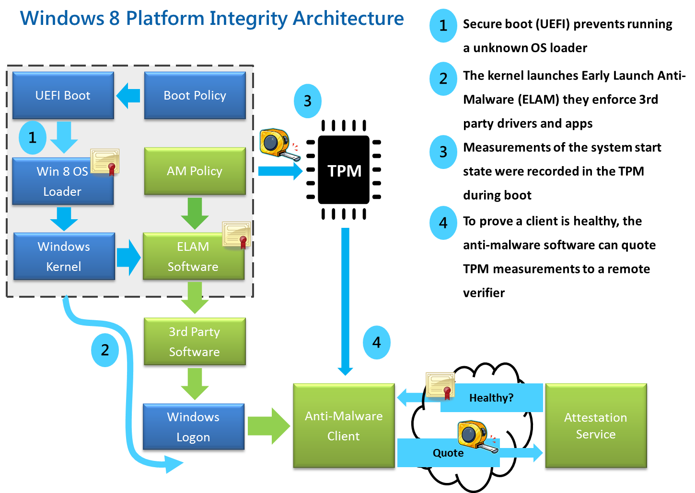

OS BootUp in Computer Security
Table of Contents
- 1. Abstract
- 2. Educational Objectives
- 3. Events
- 4. Power On to OS Loader Selection
- 5. OS Loader to OS Kernel Selection
- 6. OS Kernel Initialization to the First Process init
- 7. From Init to User Login
- 8. UEFI BIOS Boot Sequence
- 9. Trusted Platform Module
- 10. Shutting/Powering Down
- 11. Acknowledgements
- 12. References
- 13. End
1 Abstract
Abstract: We discuss how a computer system boots from powering up to user login prompt. Our focus is on what + how things can "go wrong" from a security point of view. This discussion is specific to Linux and Intel x86. But similar steps are valid for other computer systems. So that a technique is understood, we often gloss over the details, even if it is at the risk of precision, but not at the level of "whole truth".
2 Educational Objectives
Student should be able to
- Describe how a computer system boots from power-on.
- Recognize the possibilities for Trojans.
- Recognize unneeded daemons.
- Develop a proper secure boot configuration
3 Events
This discussion is specific to an architecture (such as x86 PC) and OS (such as Linux). But similar steps are valid for other computer systems. So that a technique is understood, we often gloss over the details, even if it is at the risk of precision, but not at the level of "whole truth". On the other hand, we often give specifics such as the exact name of a file even including the version number etc so that thngs are really clear. Obviously such details were valid at the time of writing, and may have to be adjusted at the time of reading.
Event scale: Mega events, major events, minor events, micro events. The following are mega events.
- Power On to OS Loader Selection.
- OS Loader to OS Kernel Selection.
- OS Kernel Initialization to the First Process init.
- From Init to User Login.
- Powering/Shutting down.
4 Power On to OS Loader Selection
[UEFI/BIOS and TPM are discussed later.]
4.1 Powering Up
System Startup: Two states a) Power Off b) Power On
State: Power off. Is CPU Working? No.
State: Power On; Hard Disk motor speeds up. What should CPU do when power is first applied?
The moment it is on, CPU Fetches, Decodes and Executes instructions. So who points to this instruction? Program counter is an internal register of CPU. Program counter gives this instruction address and its value increases. And this increment of pc value is done in decoding phase so that next instruction can be properly located.
What is the first value that the pc has? Value is typically zero but need not be; can also be some other number.
Now how do we make sure that the PC value is zero initially? When powered on the RESET SIGNAL will cause the CPU to make the pc Value to Zero. So CPU should do the Zero instruction first and now the fetch decode, execute is started. Reset Signal is not only wired to CPU but also to Sub Systems E.g., Monitor. All Sub Systems have to be powered on.
What should be there in Memory location Zero? A valid instruction.
What type of memory is it? Not a volatile RAM, but a memory that can retain its contents even while powered off. For reasons of upgradeability, it is often based on a technology that permits read-many-times, but write-only-a-few-times, often mislabeled ROM.
From the moment the machine is powered on to the moment when you can see the first character on the screen what happened?
BIOS, what does it do? BIOS contains many routines. When instructions are executed from address zero on wards, BIOS routines are called. E.g., Display a character onto the screen. All the routines that accomplish this task of printing a character on to the screen can be considered together as a device driver. An the BIOS contains such drivers for many devices: keyboard, HDD, floppy, video, etc. BIOS device drivers are limited. BIOS has minimally functional drivers. Some OS (e.g., Linux) avoid non re-entrant code and avoid BIOS routines.
The Power On self Test (POST) is a test that BIOS performs from the power-on moment till we begin to see the characters on the screen. Even if a video monitor is not there to show these messages, it communicate via other means such as it beeps.
OS is not in ROM. It is on the hard disk. How do we choose the starting point to load the OS code? The program counter should be set to that. After the instruction at zero has loaded the OS code on the starting position then you can jump to the OS code. So somewhere the BIOS routines will read from the hard disk and put the OS code below the BIOS space. And then the routine jumps to this code.
Note: New OSs do not use BIOS routines. Its not necessary that all BIOS routines be executed.
What is the size of OS boot loader code that is loaded by the BIOS routine discussed above? 446 Bytes. This code is part of MBR (master boot record) as it is known in the PC world. Its main job is to bring more data from the hard disk. Now in this 512 Bytes, there should be another program. And this program can bring more data from the hard disk and will be loaded further below in the mem. The program that is brought in is usually the OS Loader. Further details: http://en.wikipedia.org/wiki/Master_boot_record
5 OS Loader to OS Kernel Selection
How do you identify starting position of MBR? "First" track, first sector. First track is usually numbered zero.
It is the job of OS loader to bring Kernel. Why cant MBR itself bring the Kernel? It is not capable of bringing the Kernel because of MBR's small size. So MBR gets the OS loader and that in turn loads the Kernel. In our OSIS (Operating Systems and Internet Security) Lab machines, the OS Loader is NT Loader. OS Loader can bring-in and pass control over to yet another porgram. Lets say OS loader gets the OS. So now OS is loaded. Now CPU invokes instructions from the OS.
OS will bring its own device drivers and may or may not use BIOS routines. All devices are initilized.
Privileged instruction only when CPU is in the supervised mode. During the process of getting data from initial to OS loader the CPU is in privileged mode. This is a good place to do bad things. OS now loaded can change MBR so that next time when system boots up another program runs. And this is called boot sector infection.
A good OS will switch to the user mode as soon as possible. OS Designers try to get privileged mode off , Memory management on as soon as possible.
Contents of OS (not OS Loader): 1) Device Drivers 2) File system. ( it includes algorithms, while file volume is passive stuff on the hdd without algorithms) 3) Memory management. 4) Process management (creation, destruction and control of processes)
The above four together can be called a Kernel.
OS is now able to create the very first process. In Unix, it is called Init. As yet we have not seen the login prompt. Only choice user had so far was OS loader asked the user which OS the user wished to boot into, and we choose Linux.
6 OS Kernel Initialization to the First Process init
Officially, a kerenel is not a program. What is the size of Kernel? Varies widely. Depends on what is included (drivers, file systems, …) and also on whether there is a separate initrd.img.
-rw-r--r-- 1 root root 31154606 Sep 5 2013 initrd.img-3.8.0-30-lowlatency
-rw------- 1 root root 5377232 Aug 26 2013 vmlinuz-3.8.0-30-lowlatency
# file /boot/vmlinuz-3.8.0-30-lowlatency : Linux kernel x86 boot executable
bzImage, version 3.8.0-30-lowlatency (buildd@lamiak) #22-Ubuntu SMP
PREEMPT Mon, RO-rootFS, swap-dev 0x5, Normal VGA
# file /boot/initrd.img-3.8.0-30-lowlatency
/boot/initrd.img-3.8.0-30-lowlatency: gzip compressed data, from Unix,
last modified: Thu Sep 5 07:42:46 2013
6.1 Init Process
INIT: Init is the first process created by the kernel. Its process (PID) is a 1. It is by far the most important process. Init process is running while the operating system is alive. This process has to be alive in order to keep the OS completely functional.
There are many "init" programs that can become init processes. Ubuntu used "upstart" in 2009 and now (2017) uses "systemd", whereas many other Unix distributions used the so-called Sys V init. The rest of this subsection is about a middle-of-the road "generic" init.
% file /sbin/init
/sbin/init: ELF 64-bit LSB shared object, x86-64,
version 1 (SYSV), dynamically linked (uses shared libs), for GNU/Linux
2.6.24, BuildID[sha1]=0x4efe732752ed9f8cc491de1c8a271eb7f4144a5c,
stripped
Init lives while the OS is alive. Its watches the many processes that also must be alive. Just in case, e.g., a getty dies, init will start another Getty.
# ls /etc/init.d/ acpid idmapd-mounting README acpi-support irqbalance reboot alsa-restore kdm reload-smbd alsa-store kerneloops resolvconf anacron killprocs rfkill-restore apache2 kmod rfkill-store apparmor lirc rpcbind-boot apport lxdm rsync atd minidlna rsyslog atop mixmaster rtirq binfmt-support modemmanager saned bluetooth mysql sendsigs bootlogd networking setserial brltty network-interface setvtrgb console-font network-interface-container single console-setup network-interface-security skeleton cron networkSetUp smbd cryptdisks nfs-kernel-server speech-dispatcher cryptdisks-early nmbd ssh cryptdisks-enable ondemand statd cryptdisks-udev openvpn statd-mounting cups pads stop-bootlogd dbus plymouth stop-bootlogd-single dmesg plymouth-log sudo dns-clean plymouth-ready sysfsutils etc-setserial plymouth-splash udev friendly-recovery plymouth-stop udev-fallback-graphics gpsd plymouth-upstart-bridge udev-finish grub-common portmap udevmonitor gssd portmap-wait udevtrigger gssd-mounting postfix umountfs halt pppd-dns umountnfs.sh hostname procps umountroot hwclock rc unattended-upgrades hwclock-save rc.local urandom idmapd rcS x11-common
The init process is table driven. It looks into a file re what it
has to do. It is usually located
at /etc/inittab. It's like a bunch of
rules. Init process reads this file and acts accordingly. The
details of the inittab file depend on the Linux
distribution. The file names mentioned below therefore may be
different in the version of Linux we currently have.
Rc.boot is a shell script. Init invokes rc.boot via
the shell. A shell is invoked as an interpreter for statements in
rc.boot. Bash is an example shell. It is a compiled program and
init invokes bash shell and executes line by line statements of
rc.boot.
Rc.multiuser: There is yet another condition in
the /etc/inittab which invokes
rc.multiuser. OS says: Now that I am in full control, I
allow multiple users. Before this the OS was in single user mode,
i.e., the root .
6.2 Run Levels
A run level is a number, usually 0 to 6. Each level abstracts the expected activity of the system. Traditionally the levels are used as follows: 0 Halt the system. 1 Single-user mode (for special administration). 2 Local Multiuser with Networking but without network service (like NFS) 3 Full Multiuser with Networking 4 Not Used 5 Full Multiuser with Networking and X Windows (GUI), KDE/Gnome 6 Reboot.
Services that get started at run level N are determined by the etc/rcN.d directories which contain symlinks to the /etc/init.d files. The first letters of these processes is either a K or an S. The next two characters are digits chosen so that an ls listing is ordered as needed by the run level. The Kxy* processes are run when init is leaving the run level N. The Sxy* processes are run when init is entering the run levl N from some other run level.
The following are some of the important processes that are created during the startup of a typical Unix (including Linux) system.
The first letter of some processes is k. The letter k indicates processes that are kernel processes. Similarly the tail letter 'd' indicates processes that are commonly called Daemons. The daemons are alive while the OS is alive and fully functional. A death of a daemon is a sign of something gone wrong with the system.
'SYSLOGD': The syslogd process is a daemon that logs all system events into a text file, typically /var/log/messages. The system administrator determines which events are worth keeping track of. This is a very important process in terms of security since the attacker takes care to see that he eludes this process from monitoring his events. Only an incompetent attacker tries to kill this process, which makes it too obvious to the system administrator that something is wrong with the system. Killing of this process does not damage the system's functionality, but a further log of events stops.
'KLOGD': The 'klogd' process is very similar to the syslogd process but it monitors the events of the kernel. This process records the return values of the functions that are run, and creates a log file so that it is available for fault detection at a later time.
6.3 Network Setup
Network set up would typically happen in run level 2. That is, ifconfig, and route command would have been run, and the contents of /etc/resolv.conf would have been setup.
INETD: This is the "server of servers" through which all network serving connections are established. For example, if some other machine requests a telnet connection the, inetd process grants the connection. In this action, two configuration files /etc/inetd.conf and /etc/services are consulted. A more secure variant, called = xinetd=, of the functionality is now more commonly used.
RPC.PORTMAP: As the name suggests, this process contains the map of all the active ports of the system. The abbreviation rpc stands for Remote Procedure Calls. This process allocates the port for a request by a local server, and can answer a remote clients regarding where a certain service is listening..
LPD: This is the printing services daemon. This process controls all the printing activities on the system. =cupsd = also has the same functionality.
HTTPD: The collection of the httpd processes is is the web server running on the system. This web server takes the request from the user's browser and gives back the required HTML file. The program called Apache, is our httpd on Linux.
7 From Init to User Login
GETTY: The getty processes run on different virtual terminals on the
Linux system. The getty process is in charge of a user's attempt to
login. Getty Other processes discussed above do their jobs and die but
getty should not die. For every (virtual) terminal we run one
getty program. What does getty do?
- Getty prompts with "login:". When it receives input, it runs the
program called
/bin/login. This is a compiled binary program. When you have typed your user-id, /bin/login starts running. It takes the login-ID. Passwords are stored in an encrypted from in the file/etc/shadow. The login name entry causes the getty + login program to get the actual password from the shadow file of the system. - User enters the password. This password is then encrypted using the same encryption algorithm. The result is compared with the password obtained from the data base.
- If the two match, the user is allowed to log into the system and a shell is started at this point. The path name of the shell is given in /etc/passwd file.
The 'getty' process runs till the user is logged in. That is at the 'login' prompt the process that is in control is 'getty'. Once the user is logged in, the shell is started. The shell takes over the console from 'getty'. Eventually the user logs out. After the user logs out, the login prompt reappears and the console is back in the control of 'getty'.
The moment of looking up the password (in an encrypted form) and matching it with the password entered is a vulnerable point. There are programs which can 'sniff' the password entered. There are programs that can systematically 'guess' a password. They may succeed after a zillion attempts, but at the rate of, say, 1000 password-guesses/second, it will not take very long.
8 UEFI BIOS Boot Sequence
BIOS (Basic Input Output System) is being replaced by UEFI (Unified Extensible Firmware Interface) in current (2011+) PC motherboards. UEFI gets control soon after the PC is powered on, just as BIOS did. It controls all the hardware – in particular, boot devices. Its software is partly embedded in ROM chips and the rest is on a persistent storage device (typically a hard disk) in efi directory.
The UEFI can be genuinely considered an operating system. A typical UEFI implementation includes a mouse driven GUI. Some UEFI implementations contain MP3 players, web broswers, hdd backup tools, malware scanners, etc. Every UEFI implementation must comply with the UEFI standard.
Every UEFI firmware chip is pre-loaded with a secure key. The OS (Linux, Windows, …) can use this key to verify which drivers and executables can be trusted. The figure included here
 (from blogs.msdn.com 2011) describes Windows 8 boot sequence; similar sequences are expected to happen on all PC based OS.
In the OSIS Lab, we are using rEFInd, a UEFI boot manager. See references.
9 Trusted Platform Module
Trusted Platform Module (TPM) is a secure cryptoprocessor hardware, often called the TPM chip or TPM Security Device. Together with the BIOS/UEFI, the TPM forms a root of trust.
It can generate cryptographic keys, and random numbers. It can generate a (nearly) unforgeable hash-key summary of the hardware and software configuration. A third party can remotely attest that the software has not been changed. Binding encrypts data using the TPM endorsement key, a unique key burned into the chip during its production. This enables hardware device authentication. Sealing encrypts data, similarly to binding, but also specifies a state that the TPM must be in before order the data is decrypted (unsealed).
There is a research project, TrustedGRUB, that extends GRUB with a connection to the TPM to measure the binary configuration of modules to be loaded using SHA-1. The resulting measurements are securely stored within the Platform Configuration Registers (PCR) of the TPM. These values can then be used in attestation.
10 Shutting/Powering Down
A full scale OS must be shut down gracefully before a machine is powered off. Why? Because there is considerable amount of "state" information that is stored only in volatile RAM, e.g., buffers that need to be written to HDDs.
Most Linux systems enter the single user state, from the typical multi user run level, prevent any user from logging in. This includes requesting all processes to terminate. All file volumes are unmounted. Networking is shutdown. Finally, power is shut down.
lrwxrwxrwx 1 root root 6 Oct 9 11:45 /sbin/halt -> reboot
lrwxrwxrwx 1 root root 6 Oct 9 11:45 /sbin/poweroff -> reboot
-rwxr-xr-x 1 root root 14784 Oct 9 11:45 /sbin/reboot
-rwxr-xr-x 1 root root 84904 Oct 9 11:45 /sbin/shutdown
The above commands as well as pressing Ctrl-Alt-Del generates an event
that the init process intercepts initiating the shut down sequence.
These commands check that the user invoking them is effectively the
root user. Read the man pages for the differences in the above. Note
that symlinks use the fact that argv[0] points to the name of the
program invoked and based on this string value behave diffrently.
Good power supplies are capable of detecting an impending power outage
and raise an even that init notices.
11 Acknowledgements
Based on notes taken by former students of this course as I lectured.
12 References
- http://help.ubuntu.com/ Reference.
- http://www.mossywell.com/boot-sequence/ Computer Boot Up. 2012. Recommended Reading.
- http://en.wikipedia.org/wiki/Linux_startup_process Required Reading.
- M. Tim Jones, Inside the Linux Boot Process, http://www.ibm.com/developerworks/library/l-linuxboot/index.html 2006.Recommended Reading.
- http://www.piotrbania.com/all/kon-boot/ Kon-boot is a chain loader that boots into Windows or Linux and sets up "hooks" at the kernel level that bypasses password checking. Reference.
- Gnu, GRUB Documentation, 2017. http://www.gnu.org/software/grub/grub-documentation.html Recommended Reading.
- Intel, http://software.intel.com/en-us/articles/uefi-boot-manager-1, a comprehensive guide to UEFI. 2012. Recommended Reading.
- Ramsay G. Taylor, "Verification of Hardware Dependent Software", PhD Thesis, 182pp, Univ of Sheffield, Jan 2012. Uses formal methods such as CSP-OZ, Z2SAL, SAL suite, and IsabelleHOL, to check the correctness of BIOS/UEFI level software. Reference.
- Roderick W. Smith, "The rEFInd Boot Manager", http://www.rodsbooks.com/refind/, 2013. In the OSIS Lab, we are using rEFInd, a UEFI boot manager. Reference.
- Steve Johnson, Trusted Boot Loader, Talk, slides: PDF, 2006. Recommended Reading.
- Vincent Zimmer, Michael Rothman, and Suresh Marisetty, "Beyond BIOS Developing with the Unified Extensible Firmware Interface, 2e, Nov 2010. This is a free e-book from Intel. Search the web. Recommended Reading.
- Labs on BootUp